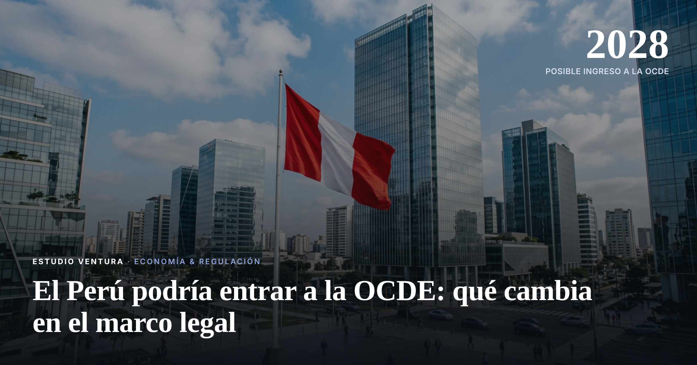

El Perú podría entrar a la OCDE: qué cambia en el marco legal

El FMI proyectó que el Perú podría ingresar a la OCDE en el segundo semestre de 2028. Entrar a la OCDE no es solo un título: implica alinear el marco regulatorio e institucional del país a estándares internacionales.
La proyección del FMI marca un horizonte concreto para un proceso que el Perú viene trabajando hace años. Entrar a la OCDE exige cumplir estándares en materia de transparencia, gobierno corporativo, política fiscal y protección de la inversión.
Esto afecta directamente cómo se hacen negocios, cómo se regula el sistema financiero y cómo se protege la inversión extranjera en el país. Para empresas y estudios legales, anticipa cambios normativos en los próximos años, probablemente empezando por finanzas, gobierno corporativo y transparencia.
Las empresas que ya cumplen estándares internacionales de compliance, PLAFT y gobierno corporativo van a tener una ventaja frente a este proceso. Conviene empezar a revisar y fortalecer esos sistemas antes de que se vuelvan exigencia normativa.
Fuente: proyección del Fondo Monetario Internacional (FMI), noviembre de 2026. Información referencial; no constituye asesoría de inversión.